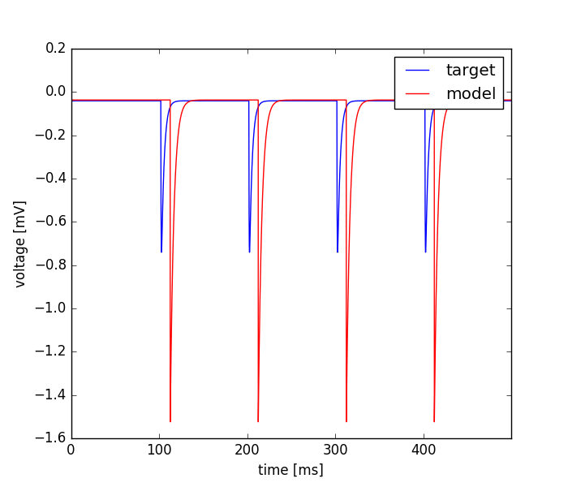

Tue Nov 29 17:20:28 2016
Optimization of simple_hh_syn_vclamp_toopt2.hoc based on: /home/mt/Downloads/optimizer/tests/VClamp_surrogate/iclamp_new.dat
Results
| Parameter Name | Minimum | Maximum | Optimum |
|---|---|---|---|
| weight | 0.001 | 1.0 | 0.0212599864767 |
| delay | 0.0 | 5.0 | 12.6340581862 |
| tau_rise | 0.001 | 1.0 | 0.0085876070077 |
| tau_decay | 0.1 | 5.0 | 4.04187994657 |
Fitnes: (0.09007603046097175, 0.04071922018530696)

Number of Repetition: = None
Initial Temperature: = None
Number of Iterations: = None
Neighborhood Size: = None
evo_strat = NSGAII-deap
seed = 1234.0
starting_points = None
Mean of Gaussian: = None
Inertia: = None
Update Frequency: = None
Crossover Rate: = None
Size of Population: = 20.0
Temperature: = None
boundaries = [[0.001, 0.0, 0.001, 0.1], [1.0, 5.0, 1.0, 5.0]]
Number of Generations: = 10.0
num_params = 4
Error Tolerance for x: = None
Cooling Rate: = None
Cognitive Rate: = None
Mutation Rate: = None
Step Size: = None
Error Tolerance for f: = None
Std. Deviation of Gaussian: = None
Social Rate: = None
feats = MSE, Derivative difference
weights = [0.5, 0.5]
user function =
def usr_fun(self,v):
#4
#weight
#delay
#tau_rise
#tau_decay
h.nc.weight[0] = v[0]
h.nc.delay = v[1]
h.ampasyn.tau1 = v[2]
h.ampasyn.tau2 = v[3]